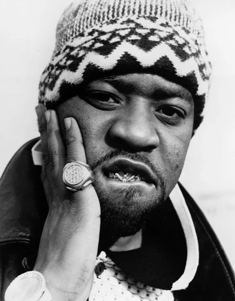

Darryl Hill, alias Cappadonna, is a member of Wu-Tang and the former mentor of U-God. He was not made an official member of Wu-Tang until much later, after the release of Wu-Tang’s 2007 release 8 Diagrams. Cappadonna’s membership was paused due to his struggles with the law, and being imprisoned during recording of Wu-Tang’s debut album.
Cappadonna was a consistent collaborator throughout the years, aiding members with songwriting and production. In 1998, he released solo project The Pillage, which hit number 3 on the charts and was Certified Gold.